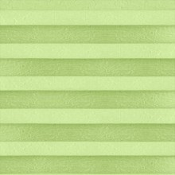
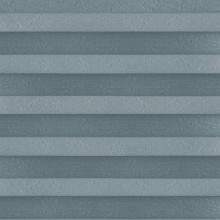
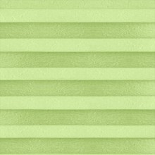
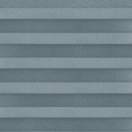
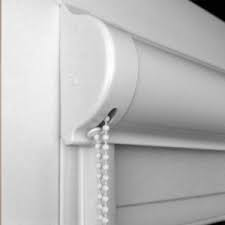
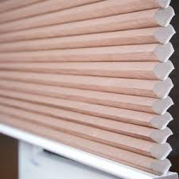
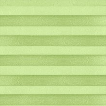
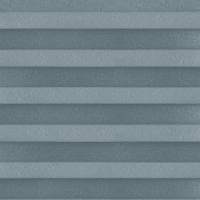

Открытые системы представляют собой вал с тканью, которая при помощи цепочного механизма, под воздействием нижней балки-натяжителя, опускается и подымается на заданное положение. Являются бюджетным вариантом солнцезащиты, цены на них значительно ниже, чем на закрытые системы. Для того, чтобы полотно ткани не провисало при открытом на проветривание окне, можно купить изделия с различными вариантами нижней фиксации. Габариты систем открытого типа различаются, в зависимости от площади перекрытия оконного проема. Системы рулонных штор для монтажа непосредственно на створку окна отличаются более миниатюрными габаритами, по сравнению с теми, которые монтируются на стену или потолок.
Закрытые системы или, как их еще называют, кассетные рулонные шторы на пластиковые окна, имеют кассету или короб, который прикрывает вал с тканью. По краям штапика клеятся плоские или п-образные направляющие, которые не позволяют ткани провисать при открытом на проветривание окне. Кассета, прикрывающая вал с тканью, защищает ее от попадания пыли, что существенно увеличивает срок службы изделия и товарного вида ткани. Закрытые направляющими края полотна не подвергаются внешнему воздействию. Солнцезащитные изделия этого типа имеют несколько разновидностей, различающихся по способу монтажа, габаритам и типам управления. Механизм кассетных систем визуально выглядит приятнее, по сравнению с открытым типом, как одно целое с оконным проемом и не бросается в глаза.
Тканевые ролеты день-ночь или "жалюзи Зебра", представляют собой два ряда полос из плотной и прозрачной ткани, чередующихся друг с другом. Их движение управляется валом, который надежно закреплен вверху системы. С его помощью можно одним движением руки регулировать расстояние между плотными и прозрачными полосками, контролируя степень естественного освещения в комнате.
Шторы плиссе - это ультрамодная и оригинальная новинка в дизайне интерьера. Богатая цветовая гамма и довольно обширное разнообразие фактур позволяет данному типу солнцезащитных систем удачно подходить практически ко всем особенностям любого интерьера и гармонично вписываться и дополнять общий стиль вашего помещения. Они одинаково превосходно смотрятся как в гостиных, в сочетании с портьерами или гардинами, так и в кабинетах или офисных помещениях.


